Summary & End Results
BACKGROUND
The League is a dating app combining technology, events, and personalized dating support. The service differentiates its experience by leveraging user data, a digital waitlist, and personal dating concierges.
OBJECTIVES & OUTCOMES
When beginning the project The League’s App Store ratings showed confused users leaving low star ratings while internal numbers showed long waits and high drop-offs. All of this contributed to an experience that was becoming damaging to the brand.
By working alongside Customer Success and Engineering and leveraging user data I identified 3 solutions. From beginning to end the projects took 6 months to complete but resulted in simplified navigation, reduced Customer Success wait times, and a new onboarding that reduced drop-off by a third.
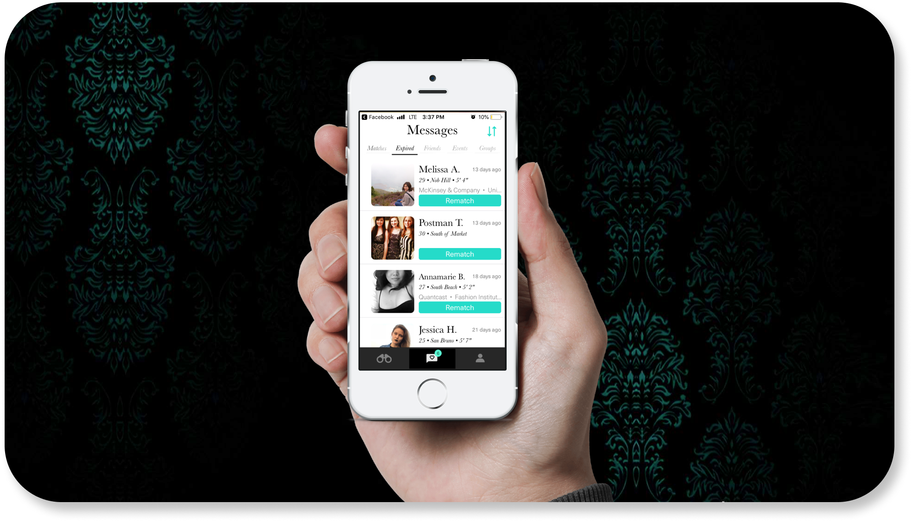
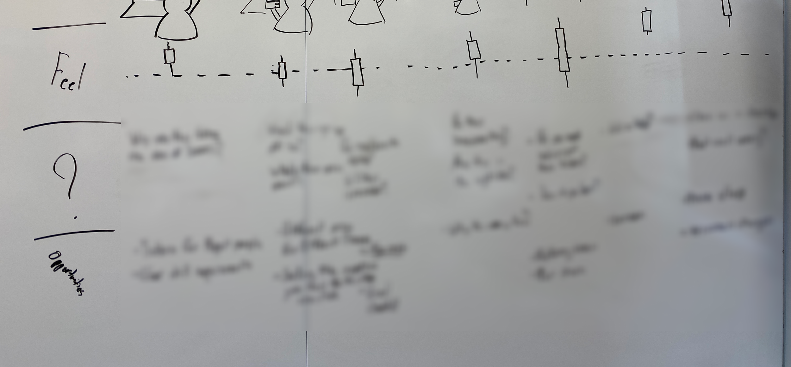
Project Metrics + Design Process
After being live for more than two years, The League was still running an almost unchanged design and didn’t have a clear picture of their userbase’s pain points. A low App Store rating and bad reviews showed a direct result of this drop in quality.
To win back quality, the team and I established a freeze on new features to prioritized optimizing what already existed. Our design process would research and prioritize our user’s needs, then rely on quick prototyping and measurements to ensure our launch was successful.
Understanding Stakeholder Needs
Research into user needs with both qualitative and quantitative data.
Research Criteria & Goals
With a huge amount of data available to The League, we established criteria that discoveries would be generated from combining qualitative and quantitative data and set clear research goals.
- Identify impactful and common pain points
- Surface users classes based on behavior
Qualitative Research
Collaborating with the Custom Success team, we reviewed years of feedback from the app store, emails, and concierge conversations. To complete any gaps I interviewed every C.S. member and 6 League users. Starting with initial sketches, our research developed into an initial journey sketch, a service blueprint, and task flows of common app actions. From this research, the team and I could move forward with a clear picture of The League’s current experience.
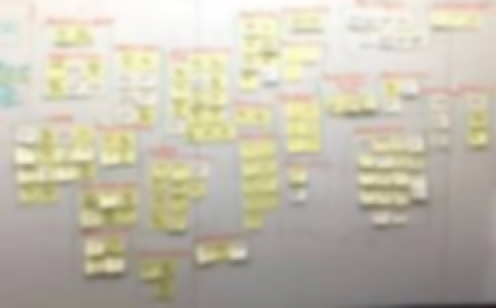
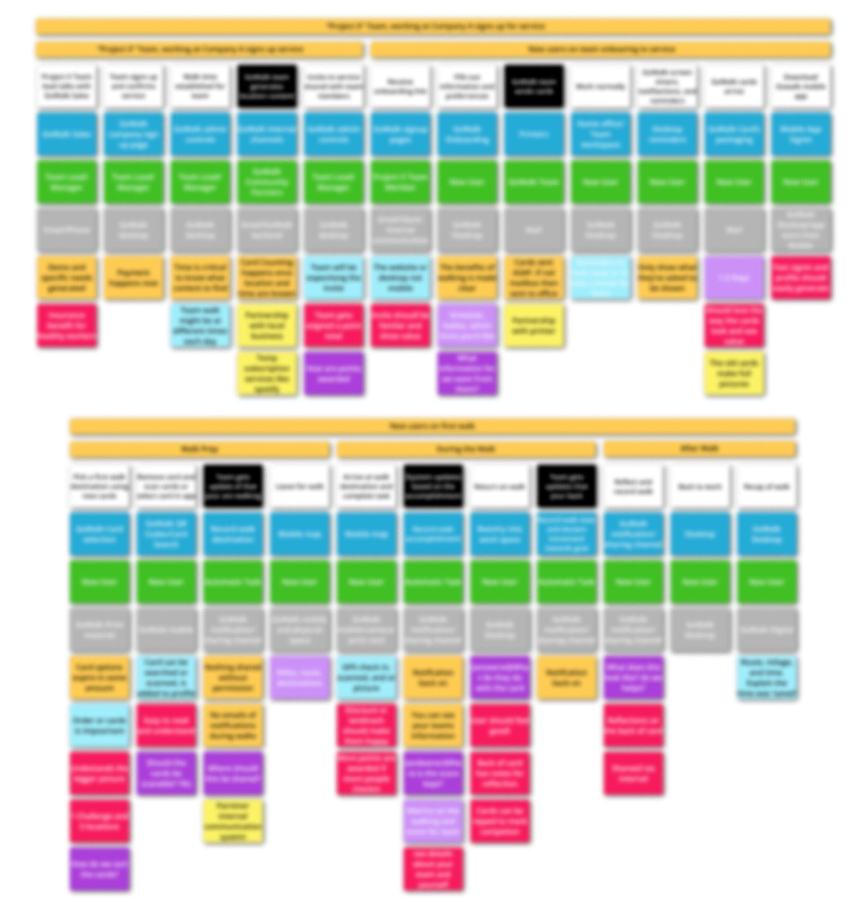
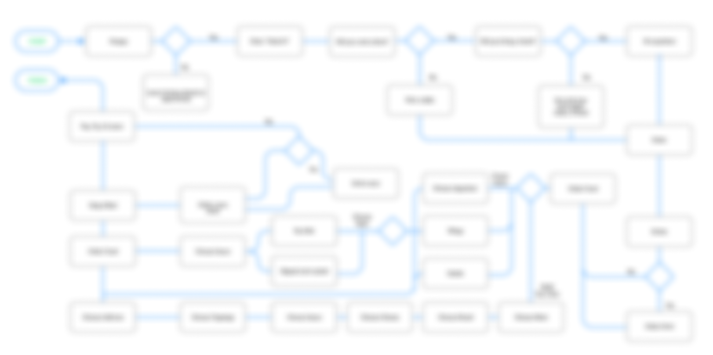
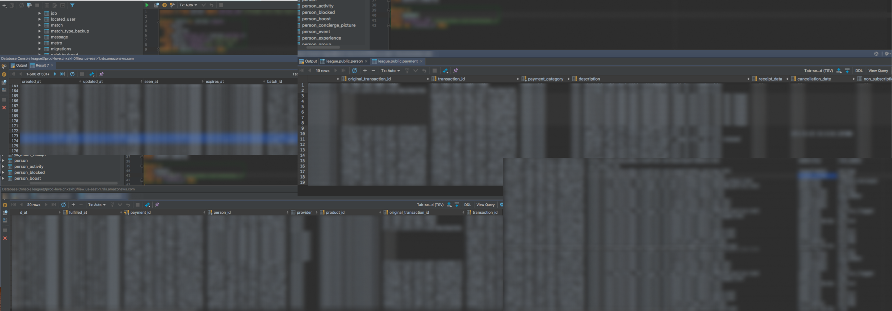
Quantitative Research
While the qualitative data allowed the team and I to grasp some of the larger trends, these findings lacked representative data from the more than 2 million active users. We turned to SQL queries and data analysis to ensure we grasped the full spectrum of user information.
Research Outcomes
With a wealth of information from feedback, user interviews, C.S. members, and user data, we were able to create 5 user personas and a final user journey map*. The insights provided by these final artifacts allowed us to achieve our research goals.
Identify impactful and common pain points:
The worst pain points affected the most people were around account verification, expired matches, and navigation
Surface users classes based on behavior:
We surfaced 5 types of users, each with unique behavior features
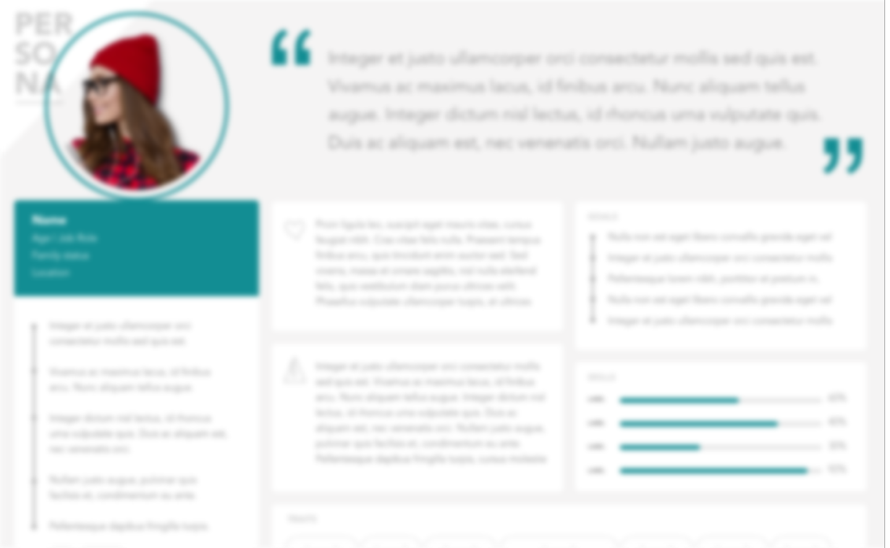
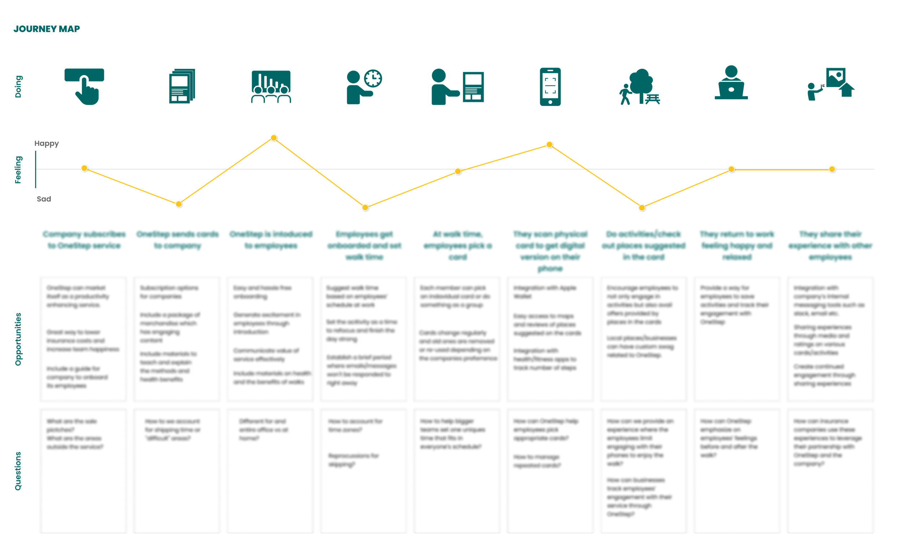
Prioritizing Needs
Analyzing and sense-making alongside business priorities for viable solutions.
Aligning with Business
Using the research and artifacts to frame our search we had clear constraints for our design solutions. Consulting with department heads, we also surfaced The League’s business priorities. Chief among them were reducing negative App Store reviews, Customer Service response time, and wasted marketing spend.
Spending time making sense of all this resulted in 3 powerful solutions.
Viable Solutions
Rekindle Expire Matches
Manually re-establishing expired matches costs the C.S. team more time than any other request. If users were enabled to rematch for themselves we would reduce C.S.’s burden, give users more options, and generate a recycled revenue stream.
Simplify from 5 to 3 tab navigation
The most biting criticism and frustrations came from users struggling to navigate or make sense of the app’s layout. If we reduced navigation from 3 to 5 tabs we might stop the worst of App Store reviews, improve usability, and reduce complexity.
Improved methods for verification
Our research showed one-third of users dropped off at verification. However, user feedback suggested new login options and could rescue these users and regain a bundle of marketing spend.
Test & Building Prototypes
Iterating potential solutions and validating designs.
Rekindle Expire Matches
With the C.S. team already re-matching users manually and so the technical function to create rematches already existed with The League’s system. The challenge was to create an authentically simple way to move this manual feature to something the user could access.
The final design was a remarkable improvement from the manual request process, was simply to engineer, hugely reduced CS’s time, and established a growing revenue stream.
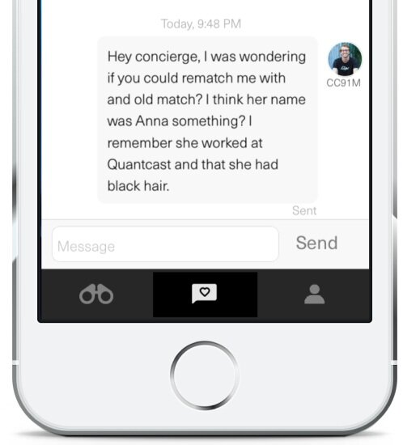
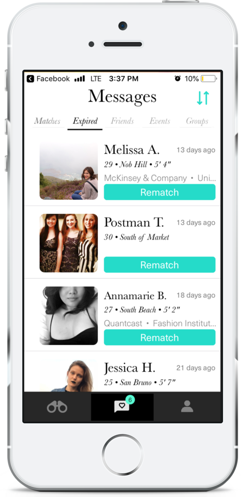
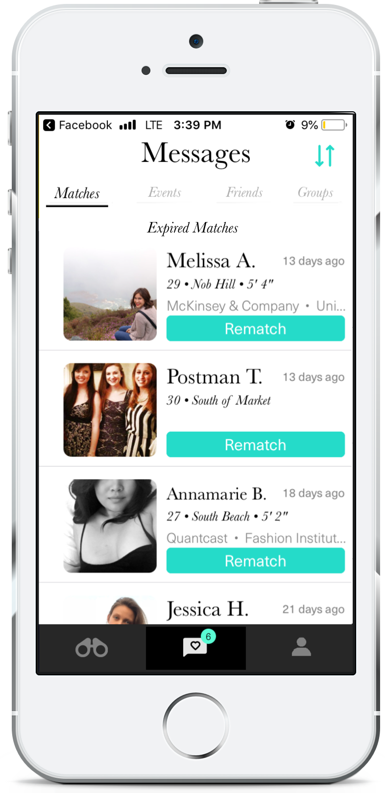


Simplify from 5 to 3 Tab Navigation
With the app's 5 tabs, users were often confused about where they should go, and it made instruction from the CS team sound like brain surgery. Interviewing users and a heat map analysis also revealed large portions of the app were rarely being used (or never).
By combining the Settings, Profile, and Preferences tab into one Profile tab with a setting icon, we created a simpler interface without sacrificing any functionality.
Improved Methods for Verification
Using Invision prototypes and UserTesting, we examined the existing sign-in flow. We saw a significant dropoff during the verification steps, with Linkedin being the most difficult for users and most crucial for the business.
By placing their larger user demands at the end of the flow we were able to show more value and have solid contact information for follow up’s from concierges. With the new flow, users could join our waitlist, learn about the offerings of The League, and then if they were ready verify LinkedIn.
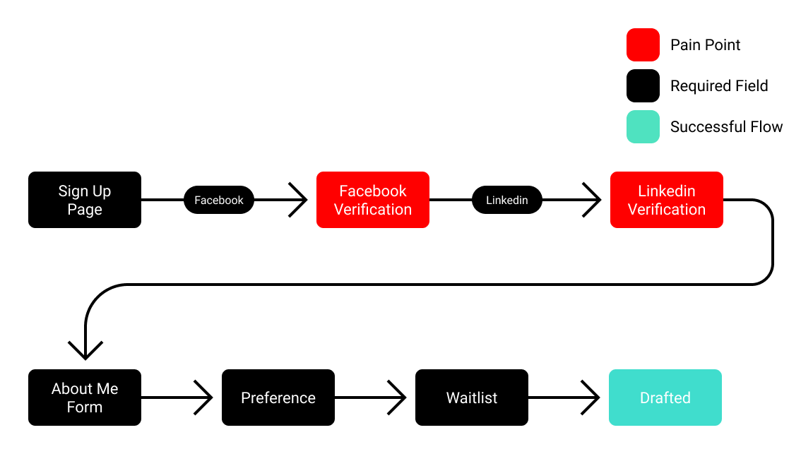

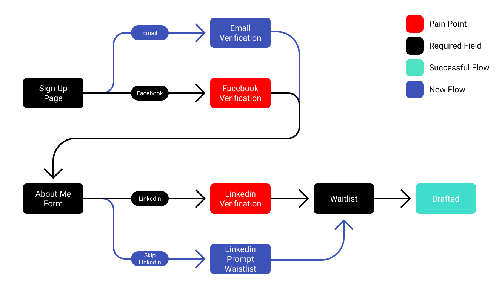
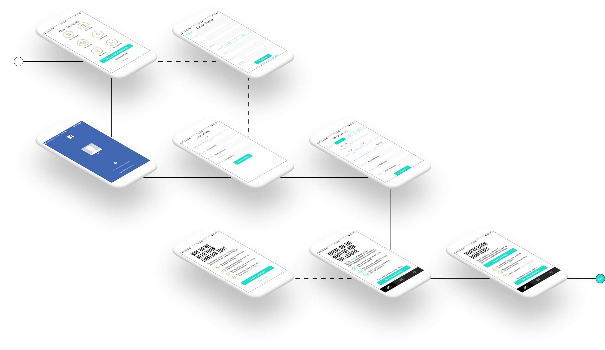

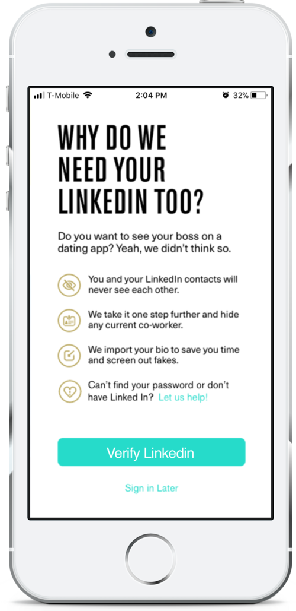
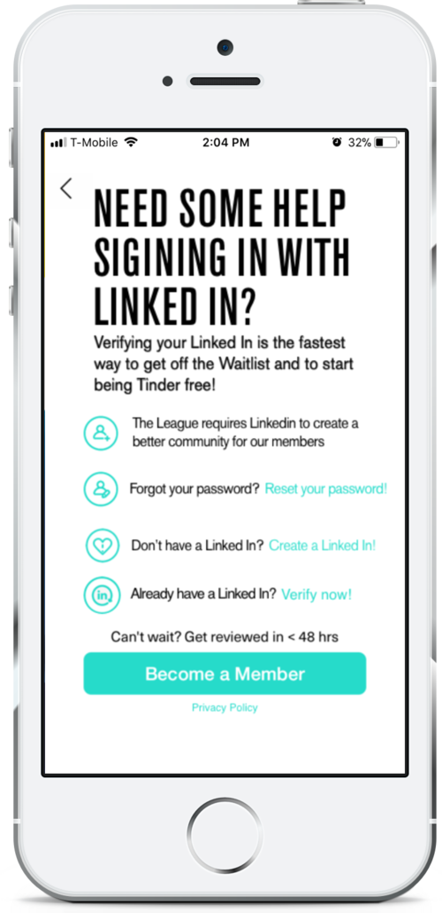
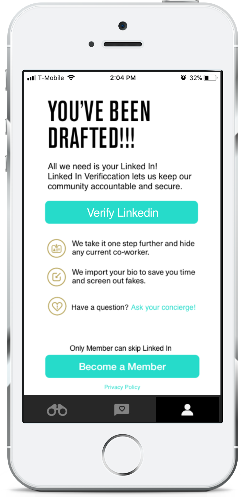
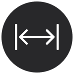
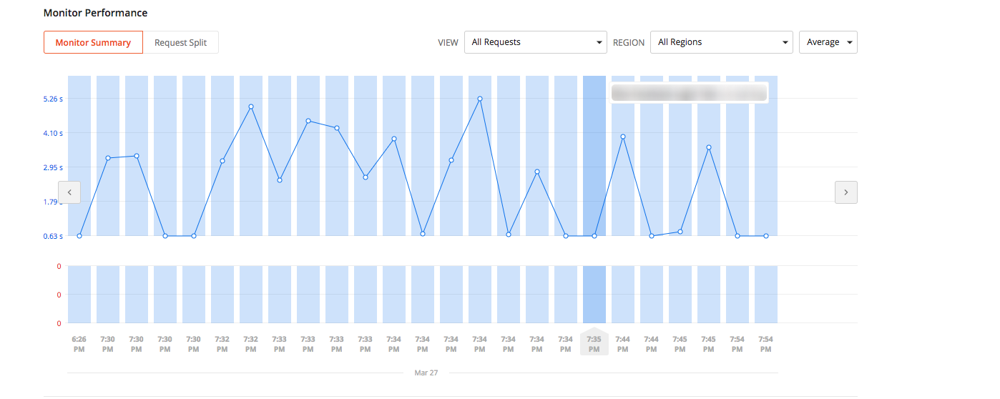
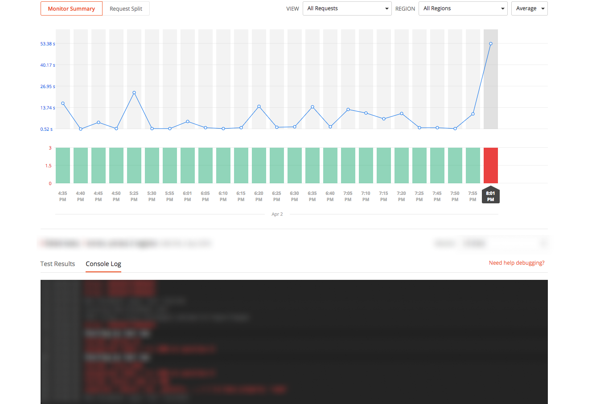
Launch & Measure
As the changes and features were released there was a notable decrease in CS requests, user complaints, and even an increase in completed user signups. Because the solutions prioritized improving the user experience with only subtle changes most users didn’t notice the changes or didn’t have their habits changed at all.
Outcomes & Final Measurements
The changes made to The League's app led to an increase in quality and improved the efficiencies from the League’s staff and user perspective. As a result, we saw:
- 94% fewer user signup drop-offs
- $15,000+ in monthly revenue created from old matches
- App store rating rose from 2.8 to 4.2
Most importantly, these design improvements worked within existing frameworks and improved the functions that were already in existence. At the end of the project, we were left with a clean and efficient environment for more vibrant features and future designs.